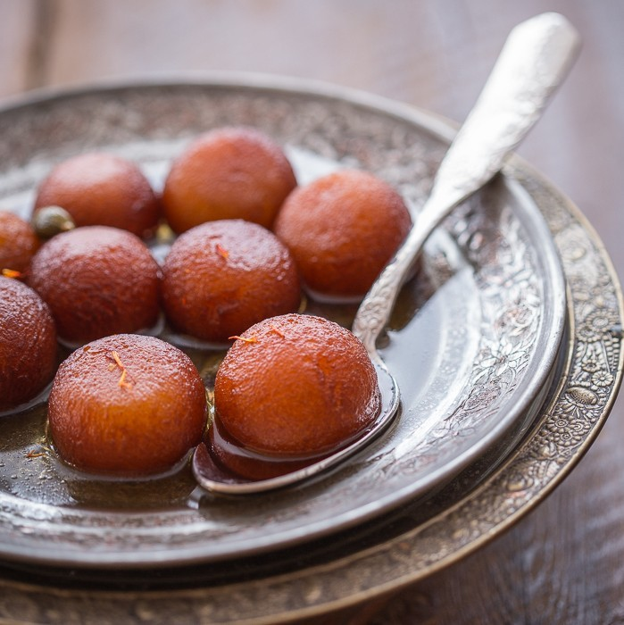

Gulab Jamun

Description
These are like little waffle balls that sit in and absorb a sugary rosewater syrup.
It was first made on the Indian subcontinent, around South Asia. Gulab Juman originated from Luqmat Al-Qadi,
an Arabic dessert. This dessert is popular at weddings, Diwali, Eid Al-Fitr and Eid Al-Adha.
There a several different types of jamun with different looks and taste. Serve hot or cold.
Ingredients
- 2 cups white sugar
- 1/2 teaspoon ground cardamom
- 2 drops rose water
- 1 pinch saffron
- 1/2 cup instant dry milk powder (such as Carnation)
- 2 tablespoons all-purpose flour
- 1/4 teaspoon baking soda
- 1 tablespoon unsalted butter (such as Land O' Lakes)
- 2 tablespoons plain yogurt
- 2 cups vegetable oil for frying
Steps
- Combine water, sugar, cardamom, rose water, and saffron in a saucepan; bring to a boil.
Reduce heat and simmer until consistency is syrupy, 5 to 10 minutes.
- Mix milk powder, flour, and baking soda in a bowl until well-combined.
Slowly mix in butter and yogurt until dough comes together.
Let gulab dough rest for 5 minutes. Shape into smooth balls the size of pennies.
- Heat oil in a deep-fryer or large saucepan to 350 degrees F (175 degrees C).
Test the temperature of the oil by dropping in a small piece of dough.
When it sits at the bottom of the pan for 1 minute before coming to the surface, the oil is ready.
- Fry 4 gulab balls at a time, stirring carefully, until dark golden brown on all sides, about 2 minutes.
Drain on a paper-towel lined plate. Repeat with remaining gulab.
- Bring syrup back up to a boil and drop in fried gulab.
Remove from heat and let them soak in the syrup, covered, 45 minutes to 1 hour.